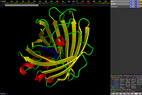

PyMOL
Dieser Artikel wurde für die folgenden Ubuntu-Versionen getestet:
Ubuntu 14.04 Trusty Tahr
Zum Verständnis dieses Artikels sind folgende Seiten hilfreich:
 PyMOL
PyMOL  ist ein Programm zur dreidimensionalen Darstellung von Proteinen und anderen Makromolekülen. Die Protein-Dateien können beispielsweise direkt von RCSB oder mit einem Plugin heruntergeladen und in PyMOL geöffnet werden.
ist ein Programm zur dreidimensionalen Darstellung von Proteinen und anderen Makromolekülen. Die Protein-Dateien können beispielsweise direkt von RCSB oder mit einem Plugin heruntergeladen und in PyMOL geöffnet werden.
PyMOL bietet eine Vielzahl von Möglichkeiten, interessante Teile des Proteins hervorzuheben und qualitativ hochwertige Raytracing-Bilder oder auch Videos für Publikationen und Präsentationen zu erstellen. Auch lassen sich mit PyMOL in begrenztem Maße Veränderungen an Proteinen und deren Auswirkung auf die Struktur beobachten.
PyMOL ist außerdem durch diverse Plugins erweiterbar. Die Anwendung ist daher ein nützliches Werkzeug in der Biologie und Pharmazie (Proteomik).
Installation¶
Folgendes Paket muss installiert werden [1]:
pymol (universe)
 mit apturl
mit apturl
Paketliste zum Kopieren:
sudo apt-get install pymol
sudo aptitude install pymol
Verwendung¶

PyMOL lässt sich entweder mit dem Befehl pymol [2] oder bei Ubuntu-Varianten mit einem Anwendungsmenü über "Lernprogramme -> Wissenschaft -> PyMOL" starten [3]. Da PyMOL OpenGL zur Grafikausgabe nutzt, wird empfohlen, eine Grafikkarte mit 3D-Beschleunigung zu verwenden.
Bedienung¶
PyMol wird mit zwei Fenstern bedient, die in den folgenden Abschnitten erläutert werden.
Tcl/Tk GUI¶
Hier werden Einstellungen wie Hintergrundfarbe und Qualitätseinstellungen vorgenommen. Proteindateien (z.B. im .pdb-Format) können über "File -> Open..." geöffnet werden. Eine ausführliche Übersicht findet man in der englischsprachigen Dokumentation .
Im unteren Teil des Fensters befindet sich eine Kommandozeile, in der komplexere Einstellungen vorgenommen werden können.
So kann man zwar über die grafische Oberfläche mit der Schaltfläche "ray" die aktuelle Ansicht mit der Raytracing-Technik neu berechnen, jedoch sind über die Kommandozeile mehr Einstellungen möglich. Mit dem Befehl:
ray 800,800
kann man beispielsweise die Größe des Bildes (800x800 Pixel) genau definieren.
Eine Sammlung der Kommandos findet man in der englischsprachigen Dokumentation .
PyMOL-Viewer¶
In diesem Fenster sieht man eine dreidimensionale Ansicht des geöffneten Proteins, welches frei vergrößert, verschoben und gedreht werden kann. Eine Hilfestellung zur Benutzung findet man wiederum in der oben erwähnten http://www.pymol.org/support Dokumentation] .
Beispiele¶
Folgende Beispiele sollen einen kleinen Einblick in die Möglichkeiten von PyMOL geben.
Auswahl einzelner Aminosäuren¶
Es ist üblich, dass in PDB-Dateien Sekundärstrukturen über Einträge wie HELIX, LOOP oder SHEET erwähnt werden. Diese Einträge ermöglichen es PyMol, diese Strukturen gesondert darzustellen.
Möchte man nun diese Bereiche nochmals hervorheben, lässt sich mit:
select <nameDerAuswahl>, resi <Anfang>-<Ende>
eine Auswahl erstellen, die dann über den Show-Dialog des Viewers von dem Rest des Moleküls hervorgehoben werden kann.
Auch können einzelne Ketten des Proteins ausgewählt werden (sofern diese in PDB-Dateien hinterlegt sind).
select <nameDerAuswahl>, chain <bezeichnerDerAsKette> & resi <Anfang>-<Ende>
Raytracing-Bild¶
In einem kleinen Beispiel soll hier gezeigt werden, wie von einem Protein ein Raytracing-Bild erstellt wird.
Zunächst wird eine Proteindatei geöffnet. In diesem Beispiel das rot fluoreszierende Protein DsRed . Das Protein hat den PDB-Code 1GGX, der im Tcl/Tk Fenster unter "Plugin -> PDB Loader Service" eingetragen werden muss.
Das Protein wird automatisch aus dem Internet geladen und geöffnet. Standardmäßig wird das Protein in der "lines"-Form angezeigt. Eine schönere Ansicht liefert die "Cartoon"-Form.
Dazu klickt man im Fenster des PyMOL-Viewer neben dem Eintrag 1GGX auf "H" (hide) und wählt "everything". Nun wählt man "S" (show) und klickt auf "Cartoon". Um nun noch die verschiedenen Strukturen farblich hervorzuheben, kann man unter "C" (color) "by SS" auswählen.
Hält man die linke Maustaste  gedrückt, kann das Protein so lange gedreht werden, bis es einem am besten gefällt. Durch Halten der rechten Maustaste
gedrückt, kann das Protein so lange gedreht werden, bis es einem am besten gefällt. Durch Halten der rechten Maustaste  kann man die Größe des Proteins festlegen. Mit dem Mausrad
kann man die Größe des Proteins festlegen. Mit dem Mausrad  ist es möglich, die Sichtweite der Ansicht zu bestimmen.
ist es möglich, die Sichtweite der Ansicht zu bestimmen.
Gefällt einem die Ansicht, kann man ein Raytracing-Bild erstellen. Im Tcl/Tk-Fenster wählt man nun zunächst unter "Display -> Background" die Hintergrundfarbe, die man haben möchte (mit "opaque" setzt man den Hintergrund transparent). Mit dem Befehl:
ray 800,800
in der Kommandozeile erstellt man jetzt das Bild mit einer Größe von 800x800 Pixeln. Ist das Bild fertig berechnet worden, kann man es mit "File -> Save Image" im .png-Format speichern.
Raytracing-Video¶
Voraussetzung ist die Installation des MEncoders.
Kommandozeile¶
Zunächst öffnet man wie oben beschrieben eine Proteindatei und passt alles so an, wie man es haben möchte. Da das Erstellen von Videos sehr speicherintensiv ist, sollte man die Ansicht verkleinern (z.B. 320x240). Dazu gibt man in der Kommandozeile des Tcl/Tk-Fensters folgenden Befehl ein:
viewport 320,240
Nun kann in der Kommandozeile festgelegt werden, wie das Video ablaufen soll. In diesem Beispiel soll das Video aus 120 Einzelbildern bestehen:
mset 1 x120
Einstellungen sind auch über den Unterpunkt "Movie" in der GUI möglich und das Protein soll sich um 360° Grad drehen:
util.mroll(1,120,1)
Jetzt muss noch Raytracing und der Bildercache aktiviert werden. Diese Optionen aktiviert man unter "Movie -> Ray Trace Frames" und "Movie -> Cache Frame Images ". Mit folgendem Befehl in der Kommandozeile wird das Video berechnet und kann auch direkt im PyMOL-Viewer-Fenster angeschaut werden:
mplay
Das Video kann über die GUI mit "File -> Save Movie" als eine Bilderfolge im .png-Format gespeichert werden. Hier im Beispiel soll die Bilderfolge mit DsRed bezeichnet werden.
Über die GUI¶
In der aktuellen Version vom PyMOL diese Einstellungen auch in der GUI möglich. Dort kann z.B. im Unterpunkt "Movie -> Programm -> Camera Loop" die Rotation eingestellt werden. Die Bildrate kann unter "Movie -> Frame Rate" verändert werden.
Video erstellen¶
Mit MEncoder ist es möglich, aus der Bilderfolge ein Video zu erstellen. Dazu öffnet man ein Terminal [3] und wechselt zum Ordner, in dem die Bilderfolge gespeichert wurde. Mit folgendem Befehl wird das Video im selben Ordner erstellt:
mencoder mf://DsRed*.png -mf w=320:h=240:fps=15:type=png -ovc xvid -xvidencopts fixed_quant=4 -o DsRed.avi
Wie ein so erstelltes Video dann aussieht, kann man auf YouTube ansehen.

 Programmübersicht
Programmübersicht- Erstellt mit Inyoka
-
 2004 – 2017 ubuntuusers.de • Einige Rechte vorbehalten
2004 – 2017 ubuntuusers.de • Einige Rechte vorbehalten
Lizenz • Kontakt • Datenschutz • Impressum • Serverstatus -
Serverhousing gespendet von